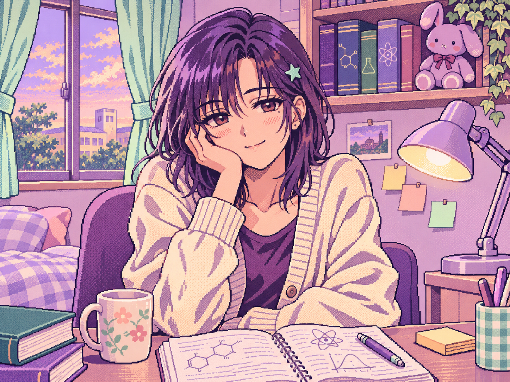

✳
学生女孩
重度依赖
STUDENT GIRL / FINAL.exe
14 DAYS TO GO · v0.6
♪ OFF
游戏说明
?
▤
课程文件
♡
结局相册
▦
行动记录
⚙
原型说明
YOU GOT
THIS!
✧
▧ ROOM_CAM.exe
CONNECTED
□

● LIVE
DAY 01 / 上午
今天也不想复习。
✧
✉ STUDENT_LINK
● online
在线聊天
2
行动记录
与 student_girl 的对话
发条消息
不消耗行动 · 不改变属性
选一句，看看她现在想说什么。
↗ TODAY'S PLAN
⌘
接下来，做点什么？
每个决定，都会消耗一次行动。
▤
复习功课
选择一门课，好好学一会儿
↗
☾
休息一下
给自己充点电
✿
外出走走
世界不只有考试
◎
上网冲浪
就看最后一条
✧
使用魔法
试试不科学的方法
✎ 箭头是基础变化。校园事件：本校保留突然加戏的权利。
×
请在浏览器中启用 JavaScript，以运行这款小游戏。